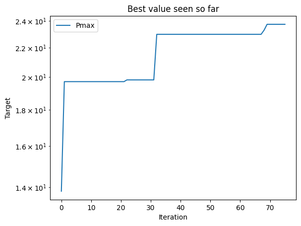
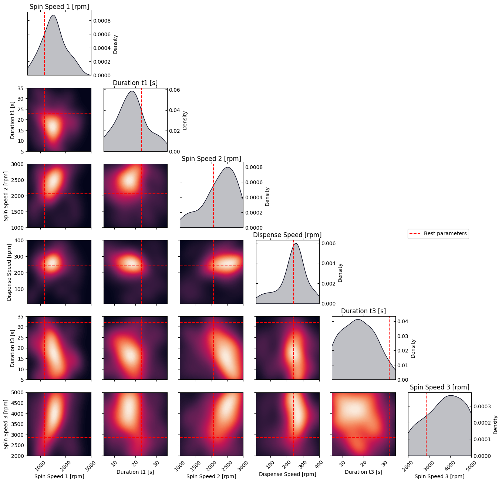

Design of Experiment: Optimize perovskite solar cells efficiency
This notebook is made to use optimPV for experimental design. Here, we show how to load some data from a presampling, and how to use optimPV to suggest the next set of experiment using Bayesian optimization. The goal here is to optimize the processing conditions for a perovskite solar cell to maximize the power conversion efficiency (PCE).
Note: The data used here is real data generated in the i-MEET and HI-ERN labs at the university of Erlangen-Nuremberg (FAU) by Jiyun Zhang for the paper: Autonomous Optimization of Air-Processed Perovskite Solar Cell in a 6D Parameter Space
[1]:
# Import necessary libraries
import warnings, os, sys
# remove warnings from the output
os.environ["PYTHONWARNINGS"] = "ignore"
warnings.filterwarnings(action='ignore', category=FutureWarning)
warnings.filterwarnings(action='ignore', category=UserWarning)
import pandas as pd
import matplotlib.pyplot as plt
import numpy as np
try:
from optimpv import *
from optimpv.optimizers.pymooOpti.pymooOptimizer import PymooOptimizer
except Exception as e:
sys.path.append('../') # add the path to the optimpv module
from optimpv import *
from optimpv.optimizers.pymooOpti.pymooOptimizer import PymooOptimizer
Get the data
[2]:
# Define the path to the data
data_dir =os.path.join(os.path.abspath('../'),'Data','6D_pero_opti') # path to the data directory
# Load the data
df = pd.read_csv(os.path.join(data_dir,'6D_pero_opti.csv'),sep=r'\s+') # load the data
# Display some information about the data
print(df.describe())
Spin_Speed_1 Duration_t1 Spin_Speed_2 Dispense_Speed Duration_t3 \
count 76.000000 76.000000 76.000000 76.000000 76.000000
mean 1520.486842 18.276316 2273.289474 234.697368 17.315789
std 458.510240 7.000188 501.488845 83.133470 7.919950
min 540.000000 5.000000 1021.000000 16.000000 5.000000
25% 1203.500000 13.750000 2019.500000 201.750000 10.750000
50% 1511.000000 18.000000 2385.500000 247.500000 17.000000
75% 1801.250000 22.000000 2671.000000 277.500000 23.250000
max 2579.000000 34.000000 3000.000000 396.000000 35.000000
Spin_Speed_3 Jsc Voc FF Pmax Vmpp \
count 76.000000 76.000000 76.000000 76.000000 76.000000 76.000000
mean 3717.789474 24.391395 1.021157 0.724692 18.320711 0.825778
std 917.207346 1.872929 0.108197 0.055290 3.486546 0.105413
min 2000.000000 12.231000 0.616300 0.448800 4.690000 0.463000
25% 3002.000000 24.173500 0.987650 0.704400 17.477000 0.785750
50% 3825.000000 24.615000 1.038750 0.734700 18.851500 0.835000
75% 4471.500000 25.279500 1.100725 0.759925 20.347250 0.895000
max 5000.000000 25.938000 1.162200 0.810900 23.729000 0.990100
Rseries Rshunt
count 76.000000 76.000000
mean 3720.112882 2763.793289
std 1487.516713 1956.263177
min 92.129000 2.990000
25% 3146.452500 228.750000
50% 3739.157000 3290.000000
75% 4567.406250 4285.000000
max 6513.151000 6860.000000
Define the parameters for the simulation
[3]:
params = [] # list of parameters to be optimized
Spin_Speed_1 = FitParam(name = 'Spin_Speed_1', value = 1000, bounds = [500,3000], value_type = 'float', display_name='Spin Speed 1', unit='rpm', axis_type = 'linear')
params.append(Spin_Speed_1)
Duration_t1 = FitParam(name = 'Duration_t1', value = 10, bounds = [5,35], value_type = 'float', display_name='Duration t1', unit='s', axis_type = 'linear')
params.append(Duration_t1)
Spin_Speed_2 = FitParam(name = 'Spin_Speed_2', value = 1000, bounds = [1000,3000], value_type = 'float', display_name='Spin Speed 2', unit='rpm', axis_type = 'linear')
params.append(Spin_Speed_2)
Dispense_Speed = FitParam(name = 'Dispense_Speed', value = 100, bounds = [10,400], value_type = 'float', display_name='Dispense Speed', unit='rpm', axis_type = 'linear')
params.append(Dispense_Speed)
Duration_t3 = FitParam(name = 'Duration_t3', value = 10, bounds = [5,35], value_type = 'float', display_name='Duration t3', unit='s', axis_type = 'linear')
params.append(Duration_t3)
Spin_Speed_3 = FitParam(name = 'Spin_Speed_3', value = 3000, bounds = [2000,5000], value_type = 'float', display_name='Spin Speed 3', unit='rpm', axis_type = 'linear')
params.append(Spin_Speed_3)
Run the optimization
[4]:
# Define the Agent and the target metric/loss function
from optimpv.general.SuggestOnlyAgent import SuggestOnlyAgent
suggest = SuggestOnlyAgent(params,exp_format='Pmax',minimize=False,tracking_exp_format=['Jsc','Voc','FF'],name=None)
[5]:
# Define the optimizer
optimizer = PymooOptimizer(params=params, agents=suggest, algorithm='GA', pop_size=6, n_gen=1, name='pymoo_single_obj', verbose_logging=True,max_parallelism=20,existing_data=df, suggest_only=True)
[6]:
to_run_next = optimizer.optimize() # run the optimization with pymoo
print(to_run_next)
[INFO 01-20 10:27:00] optimpv.pymooOptimizer: Starting optimization using GA algorithm
[INFO 01-20 10:27:00] optimpv.pymooOptimizer: Population size: 6, Generations: 1
[INFO 01-20 10:27:00] optimpv.pymooOptimizer: Using existing population of size 76
[INFO 01-20 10:27:00] optimpv.pymooOptimizer: Suggesting new points without running agents
Spin_Speed_1 Duration_t1 Spin_Speed_2 Dispense_Speed Duration_t3 \
0 929.036995 23.005446 1660.352671 315.159857 27.500998
1 1871.615281 33.228110 2551.424113 121.113338 12.396043
2 520.577993 7.366979 2328.103550 363.854725 15.677440
3 2618.113920 24.337281 1242.700817 259.025808 34.783995
4 792.886919 13.789641 2919.778841 15.241482 22.072239
5 1739.231126 22.126389 1509.542469 311.397956 29.195343
Spin_Speed_3
0 2953.961855
1 4177.230204
2 3791.927302
3 3771.771594
4 2917.544700
5 2771.506583
[7]:
# get the best parameters and update the params list in the optimizer and the agent
optimizer.update_params_with_best_balance() # update the params list in the optimizer with the best parameters
suggest.params = optimizer.params # update the params list in the agent with the best parameters
print("Best parameters found:")
for p in optimizer.params:
print(f"{p.name}: {p.value} {p.unit} ")
Best parameters found:
Spin_Speed_1: 1165 rpm
Duration_t1: 23 s
Spin_Speed_2: 2063 rpm
Dispense_Speed: 241 rpm
Duration_t3: 32 s
Spin_Speed_3: 2863 rpm
[8]:
# Plot optimization results
data = optimizer.get_df_from_pymoo()
all_metrics = optimizer.all_metrics
all_minimize = optimizer.all_minimize
plt.figure()
for i, metric in enumerate(all_metrics):
if all_minimize[i]:
plt.plot(np.minimum.accumulate(data[metric]), label=metric, )
else:
plt.plot(np.maximum.accumulate(data[metric]), label=metric, )
plt.yscale("log")
plt.xlabel("Iteration")
plt.ylabel("Target")
plt.legend()
plt.title("Best value seen so far")
print("Best value seen so far is ", max(data[all_metrics[0]]), "at iteration ", int(data[all_metrics[0]].idxmin()))
plt.show()
Best value seen so far is 23.729 at iteration 27

[9]:
# Plot the density of the exploration of the parameters
# this gives a nice visualization of where the optimizer focused its exploration and may show some correlation between the parameters
plot_dens = True
if plot_dens:
from optimpv.posterior.exploration_density import *
params_orig_dict, best_parameters = {}, {}
for p in optimizer.params:
best_parameters[p.name] = p.value
fig_dens, ax_dens = plot_density_exploration(params, optimizer = optimizer, best_parameters = best_parameters, optimizer_type = 'pymoo')
